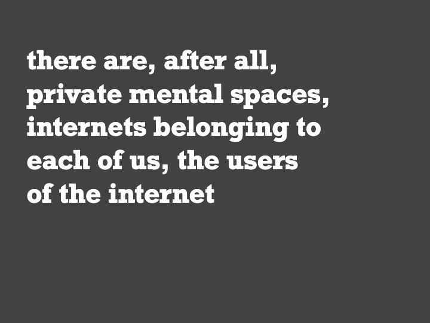

A sudden expansion of scale
“A dark room” is a text-based, Rogue-like computer game, which starts in a dark room, where your task is to light a fire and to keep it burning. Then the scale of the game expands, and there is a world outside of the room. People enter, you gather resources, and find out that you are in a village. Suddenly your goal is to manage different aspects of the village life. Until the scale expands again, and there is a whole world to discover.
Great storytelling can be built on such shifts of scale, as you experience the world expanding around you in fascinating ways. This is the stuff of “A dark room”, but also of many great stories.
This also turns out to be the narrative arc of my activism.
Around twenty years ago, somewhere between my graduate and PhD studies, I found out about Creative Commons, Free Culture, and copyright activism. I read extensively Lawrence Lessig’s papers, and went on to translate his “Free Culture” into Polish (through a collaborative process that fit well Benkler’s definition of commons-based peer production - my Mom told me it would have been faster to ditch that bazaar, and translate it in a traditional, cathedral-style process).
In 2004, I co-founded the Polish chapter of Creative Commons as a volunteer, then got a job that allowed me to do this work and be paid, and by 2009 co-founded my own organization, focused on promoting things free and open. I also became at that time strongly engaged in copyright reform activism, which led me and my friends at the Communia Association to spend 5 intensive years as public interest advocates in the policy debate on the EUropean Copyright Directive.
In 2002–twenty years ago–I created my first blog, called “Terminal internetyki”, the internetics terminal. “The terminal has the goal of monitoring and sociologically analysing changes caused by the development of new media”, said the “About” page. “We are working on launching the Polish branch of the Creative Commons project, I added on the margin.
The first post linked to a New York Times article about Joseph Turow, a researcher who decided to stop capitalizing the word “Internet”. Turow argued that the internet was not a “brand-name experience”, but a “part of the everyday universe”. The text also mentions Robert Kahn, one of internet’s co-creators, who was at that time defending “the right of people to use the word ‘Internet’ for what we think of as the Internet”, against some trademarking attempt by an IPR maximalist company.
This clearly struck a note. I summarized the article, and then added: “We can speak about the Internet, the internet or even the internets. Alongside the one medium, a great and common telecommunications spidernet, there are, after all, private mental spaces, internets belonging to each of us, the users of the internet”.

Reading this today, I’m surprised how close my thoughts were back then to what I find interesting and important today. And how very Indieweb it was, although I did not know the term at that time.